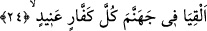

yaratmıştır. Allah nebileri saîd olanlar onlara uysun diye ve İblis’i de şakî olanlar ona
uysun diye yaratmıştır. İkisi arasındaki fark da ortaya çıkmaktadır. İblis ateşe ve hilafa
rehber ve dâvetçidir. Mülkü dünyadır. Onu kâfirlere sunduğu zaman “fiyatı nedir?”
denir. “Dini terk etmek” diye cevap verir ve kâfirler onu din karşılığında satın alır.
Zahidler ise terk eder ve ondan yüz çevirirler. Dünyaya rağbet edenler ise kalplerinde
ne dini ne de dünyayı terk etme hissini bulamazlar ve “ne olduğunu öğrenebilelim diye
bize dünyadan bir tadımlık ver” derler. İblis de “bunun karşılığında bana bir rehin
verin” der. Onlar da işitme ve görme duyularını verirler. Bu sebepten dolayı dünya
erbabı dünyanın haberlerini duymayı ve süslerini görmeyi sever. Çünkü onların işitme
ve görme duyusu İblis yanında rehindir. İblis rehini aldıktan sonra onlara bir tadımlık
verir. Onlar zâhidlerden dünyanın kusurlarını dinlerler ama kötülüklerini görmezler.
Aksine dünyanın süs ve metâını hoş görürler. Bu sebeple “bir şeyi sevmen seni kör ve
sağır eder” denir. Diğer bir kısım ise “Allah İblis’i, mü’min, efendisinin kanatları ve
koruması altında bulunsun diye yaratmıştır. Çünkü kurt olmazsa kuzuların çobanı
olmazdı. Allah İblis’i karanlık ve pislikten yaratmıştır. Onun tabiatı düşmanlık üzeredir.
Allah’tan bizleri ondan korumasını ve azad etmesini dileriz.
24. (İki meleğe şu emir verilir:) Haydi ikiniz her inatçı kâfiri,
Bu, Allah tarafından ya sevk eden ve şâhidlik eden meleklere ya da ateş bekçileri olan
iki meleğe ya da iki vasfı da kendisinde barındıran bir meleğe ya da ateş bekçisine bir
hitaptır.
Diğer bir vecih de şudur. Araplarda genelde birisine iki kişi refakat eder. Yani
seferde yardımcıların en azı ikidir. Bundan dolayı dillerinde “dostum ve arkadaşım
durdu” ve “yardım etti” ifadeleri çokça görülür. Hattâ İmru’l-Kays’ın da dediği gibi
Araplar, bir kişi için bile zaman zaman tesniye hitabı kullanırlar.
“Bütün kâfirler” ifadesiyle nimet verene ve nimete küfran noktasında aşırıya giden,
imandan yüz çevirerek tevhid inancına karşı çıkan herkes kastedilmiştir. Ayrıca her
kâfirin bir başkasını küfre sürükleyeceği söylenmiştir. “İnatçı olan” hakka karşı inatçı
olandır. O, hakkı biliyor ve ona karşı çıkıyor. İnat küfrün en kötüsüdür. Katâde inatçı
için “itâat konusunda sapkın kişi” demiştir. Süddi ise “anîd” kelimesi “ınde” kökünden
türemiştir. Bu da boğazı kapatan bir kemiktir. Ya da “bende şu vardır” diyenler gibi
elindeki ile kibirlenen kişi mânâsına gelir. Aynü’l-meânî’de de bu şekilde geçmektedir.
Müfredât’ta “anîd” elindeki ile böbürlenen kişidir. “muânid” ise elindeki ile övünen
kişidir. “Anûd” ise gayeden sapan kişidir. Yani haktan yüz çeviren ve bilerek onu
reddeden kişidir, denmiştir.